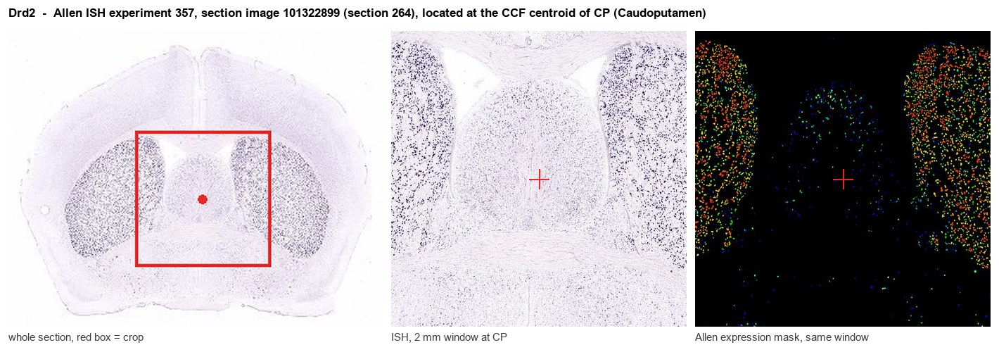
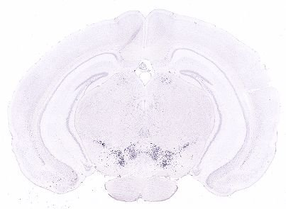
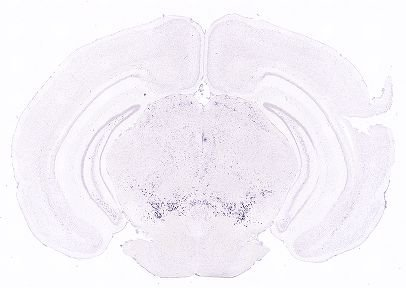
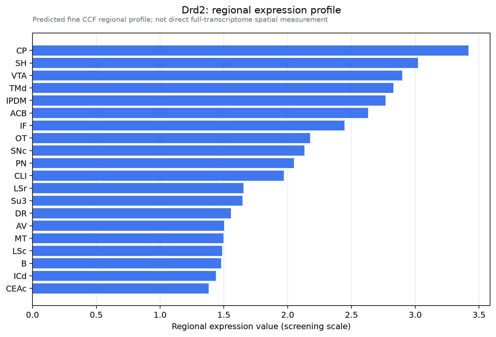

Drd2
D(2) dopamine receptor (Dopamine D2 receptor)
Spatial tier: REGION_BIASED · Class: GPCR · Top region: CP (Caudoputamen) · Positive regions: 32/554
43.6Discovery Score
41.4Targetability Score
CEvidence grade C
What this means: Drd2: fine CCF profile is region-biased toward CP (top regions: CP, SH, VTA, TMd, IPDM); this is a discovery lead, not direct proof.
Function in CP: evidence, prediction, innovation
- Gene function
- Drd2 encodes the dopamine D2 receptor, a Gi/Go-coupled class-A GPCR. Activation inhibits adenylyl cyclase and PKA, opens GIRK channels, inhibits calcium channels and recruits beta-arrestin-2/Akt-GSK3 signalling. It acts both postsynaptically on striatal projection neurons and as a presynaptic autoreceptor on dopamine terminals, and is the shared target of essentially all antipsychotics.
- Region function
- The caudoputamen is the dorsal striatum, main input nucleus of the basal ganglia; its direct (D1) and indirect (D2) spiny-projection-neuron pathways support action selection, habit learning and reinforcement.
- Published in this region
- direct Direct and extensive. Gerfen et al. 1990 (Science) established Drd2 mRNA as the marker of striatopallidal neurons; Baik et al. 1995 (Nature) showed D2 knockout mice have parkinsonian-like bradykinesia; Kravitz et al. 2010 (Nature) showed optogenetic activation of D2/indirect-pathway neurons causes akinesia while direct-pathway activation relieves it. Cazorla et al. 2012 showed striatal D2 receptors control spiny-neuron dendritic complexity and excitability via Kir2 channels.
- Predicted function
- Prediction (largely already confirmed): D2 signalling in caudoputamen indirect-pathway neurons suppresses their excitability and glutamatergic drive, so local Drd2 loss should increase indirect-pathway output and produce hypolocomotion, impaired habit and reinforcement learning, and greater D2-antagonist catalepsy; overexpression should reduce dendritic arborisation.
- Innovation
- ★☆☆☆☆ 1/5 D2 receptors in dorsal striatum are among the most intensively studied gene-region pairs in all of neuroscience.
- Tools
- Drd2-Cre and Drd2-EGFP BAC lines (GENSAT, Gong 2007), Adora2a-Cre for the same population, floxed Drd2 alleles; agonists quinpirole and sumanirole, antagonists raclopride, eticlopride and haloperidol; validated D2 antibodies and Cre-dependent DREADD and opsin AAVs.
- References
Direct evidence located at the region

Allen ISH experiment 357, section image 101322899 (section 264): the section that contains the CCF centroid of Caudoputamen according to the Allen image-to-atlas alignment (reference_to_image), with a 2 mm window around that point. Left: whole section, red box = window. Middle: ISH signal. Right: Allen's expression-mask view of the same window. open this image in the Allen viewer
Look it up yourself: Allen Mouse Brain ISH for Drd2Allen reference atlas: CP (structure 672)ABC Atlas MERFISH viewer(in the ABC Atlas choose dataset MERFISH-C57BL6J-638850-CCF, colour cells by gene "Drd2" or by parcellation_substructure "CP")All genes confined to CP + 3-D brain
Direct spatial evidence
MERFISH REGION LOCATOR

DIRECT ALLEN ISH

DIRECT ALLEN ISH

Regional expression figure

Predicted WMB × fine-CCF profile; not direct full-transcriptome spatial measurement.
Spatial profile
Evidence and specificity
- Evidence status
- PREDICTED_FINE
- Direct sources
- None; predicted localization only
- Exclusive threshold
- 12 positive regions out of 554
- Spatial specificity
- 0.309
- Top-region fraction
- 0.046
- Filter status
- PASS
Interpretation limits
- Cell-type-to-region projection is imputed expression, not direct spatial measurement.
- Adult reference atlases do not establish stability across age, sex, strain, state, or disease.
- Transcript abundance does not guarantee protein abundance or genetic-tool performance.